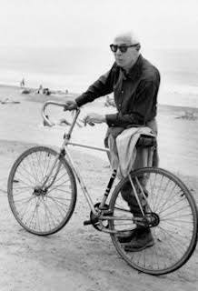
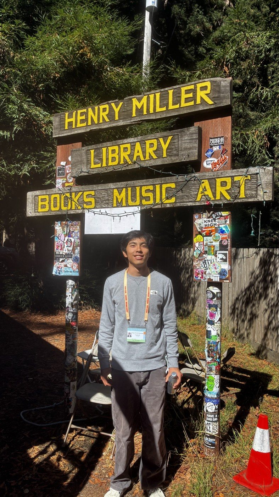
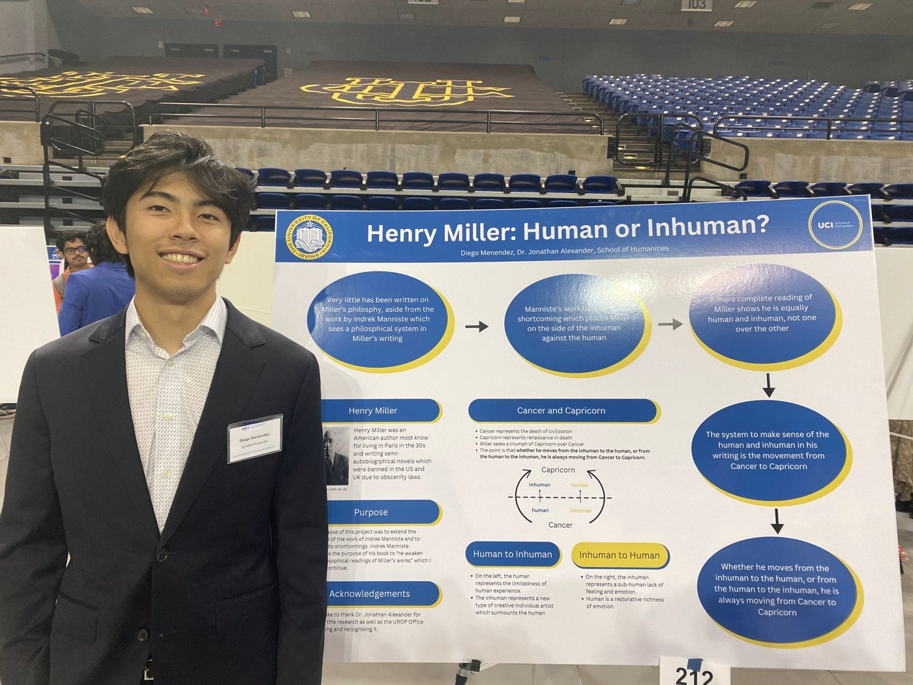
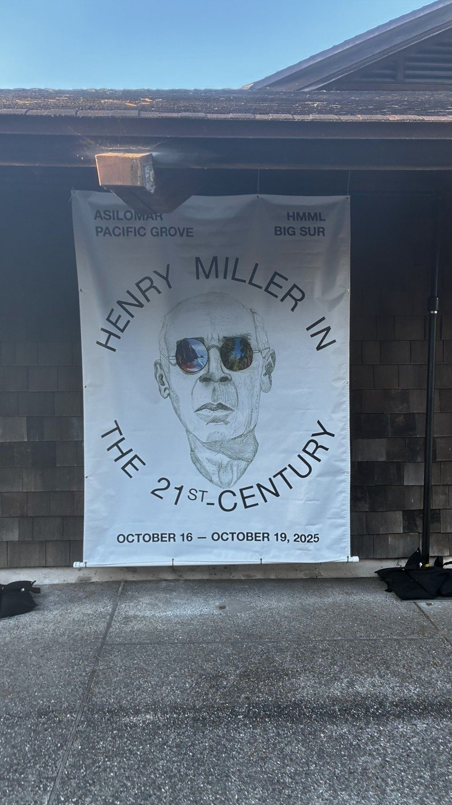

The summer before my senior year in high school, I got COVID while in Paris. Bedridden, I began reading a book I had just bought the day before at Shakespeare & Co.: Henry Miller's Tropic of Cancer. Oddly, I believe I picked up the book because I recognized it as the topic of a chapter in The Thirst for Annihilation by Nick Land. Anyways, since I could not walk the streets of Paris, Miller walked them for me. I got an odd joy reading him name roads and places I had just become acquainted with in the week I had been in Paris so far. I finished the book after a day and a half of non-stop reading. I moved on to Naked Lunch by William Burroughs but remember telling myself I needed more of this Miller guy the second I got back to the States. Eventually I did, and began Tropic of Capricorn, then Black Spring, and so on until I reached The Smile at the Foot of the Ladder and his letters with his friends.

What kept me reading was the force of identification. I felt that I was reading uniquely my own thoughts. Funnily, there were a number of coincidences that all followed the same pattern of me independently discovering a new something that I liked (Utrillo for example) and then the next day reading Miller rant about discovering himself what I had just discovered on my own. Embarrassingly, all my friends in high school knew I was obsessed with him but I did get several of my friends to read him.
This obsession only deepened in college when I read The World of Lawrence. I will probably write a whole thing on that book and add it to this page someday. I think it was around here that I had the half-joking conviction that I was the only person on this continent that truly understood Miller. Having met his biographers, scholars, and friends, I can happily say that I am not the only one. But there remain some aspects of his writing that speak to me so personally, in such secretive ways, that I sometimes do believe that everything he wrote, he wrote just for me.

A few weeks into my first year at UCI, I decided that it was now or never if I wanted to take my love of Miller and take it to the academic realm. So I emailed a dozen professors in the English department asking if they would advise my project on Henry Miller. They would all say something like 'Sounds interesting, but Miller isn't my area of expertise. Have you tried so-and-so?' I got this answer so many times I was making referral loops through the English department. Eventually, Dr. Jonathan Alexander agreed to advise my project. Why he agreed, knowing I was a first-year aerospace engineering student five weeks into college, I will never quite know, but I will forever be grateful.
I submitted a UROP proposal and asked for $100 for poster printing and set a goal of submitting for the call for papers for the American Literature Association's (ALA) annual conference. I had a wonderful time doing this project. Week to week I would set myself reading goals and track what I had learned from each one. I reviewed others' writing on Miller and did deep dives into tracing every usage of the term 'inhuman' in the tropics. At some point, I fortuitously stumbled upon a letter he wrote to Anaïs Nin, which I found perfect to tie together my thoughts and create a framework to put forth my ideas.
At the time, the things I wanted to say about Miller were most closely tied to the work of Indrek Männiste and his thesis and book. The poster I presented during the spring quarter of my freshman year focused on the human and inhuman in his writing, and using the symbols of Cancer and Capricorn to resolve apparent contradictions. My paper abstract was ultimately not accepted by the ALA, but I would soon learn that even better things were to come.

[What the conference was like, what I presented, and what the experience meant to me.]
[A line about the Q&A, such as: The Q&A after the talk is also on YouTube.]
[A few sentences on the written publication: what it collects and when it is coming out.]
[Purchase link goes here when it is available.]